Can you win?
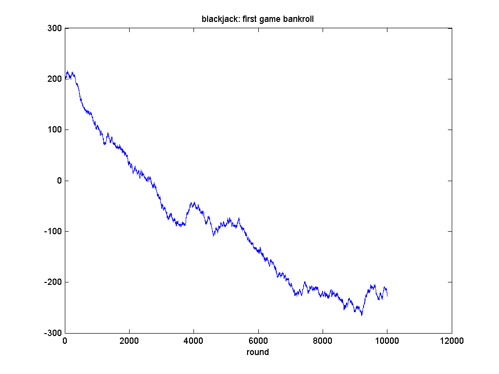
initial bankroll $200; base wager $1; no splitting; no doubling down;
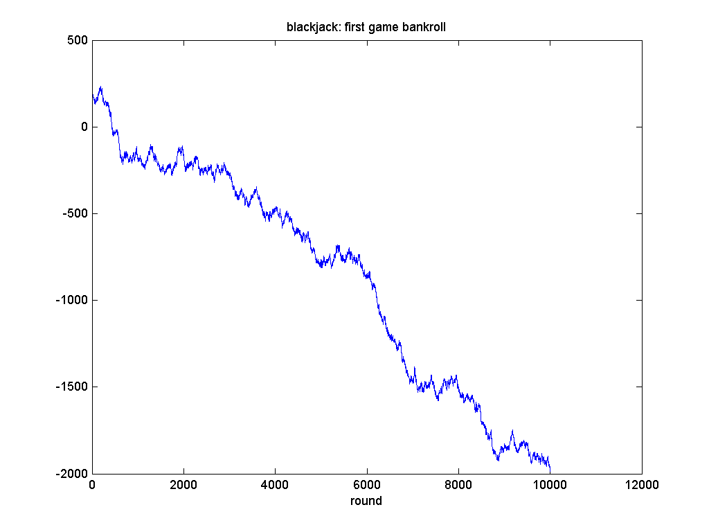
initial bankroll $200; base wager $5; no splitting; no doubling down;
$ ./a.exe 10000000
total games played : 1000
total rounds played: 10000000
total hands played : 10000000 (averaging 10000 hands per game)
total hands won : 4284901
total hands lost : 4851076
total hands pushed : 864023
------------------------
sum : 10000000
blackjacks : 452784
win ratio : 0.42849
loss ratio : 0.485108
push ratio : 0.0864023
blackjack ratio : 0.0452784
win ratio disregarding pushed hands : 0.469014
loss ratio disregarding pushed hands: 0.530986
blackjack ratio disregarding pushed : 0.0495605
ratio of wins due to blackjack : 0.10567
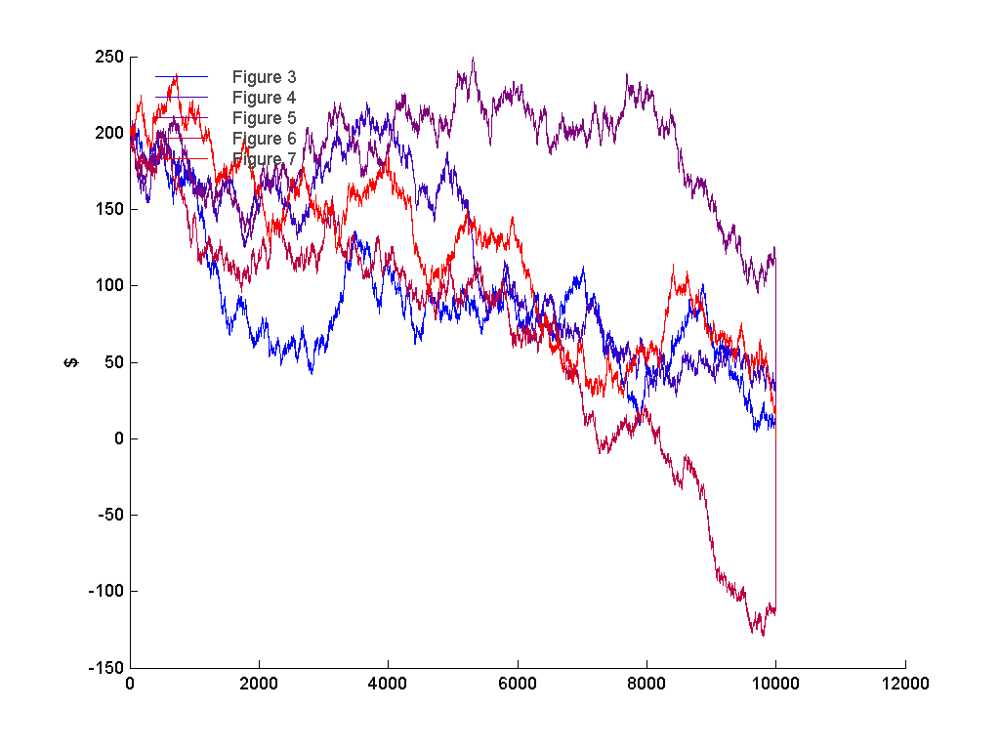
including splitting and doubling down
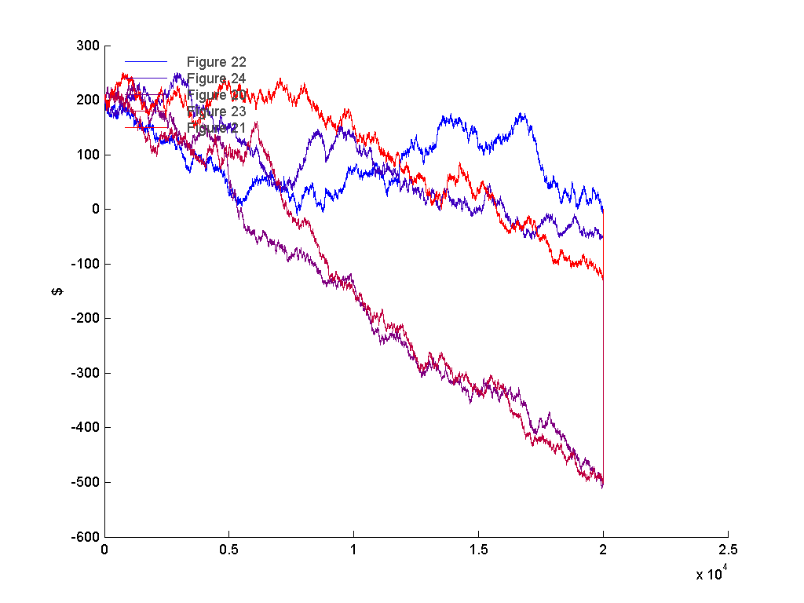
including splitting and doubling down (longer games)
No.
You "almost surely" cannot win in the long run.
Expected winnings per hand is something like -$0.005 per dollar (depending on rule variations).
Maybe?
What about in the short term?
If you play a "small" number of rounds, you can certainly get lucky.
Is there a clever way of betting that increases odds of winning in the short term?
Martingale
Double your wager after each loss.
(Reset to base wager after each win.)
Geometric sums!
Payoff from nth wager: 2n+1
Sum of wagers: 2n+1 − 1
So you always come out ahead $1 eventually.
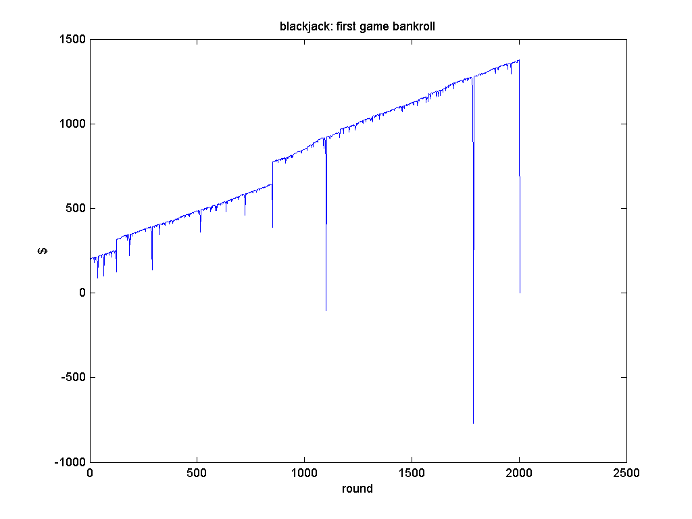
Martingale (initial bankroll $200; base wager $1; no splitting; no doubling down;)
Woo Hoo!
Almost $1500 after 2000 rounds!
Side note: 2000 rounds is approx. 10 to 40 hours (depending on how many players
are at the table and the level of experience of the players and the dealer).
Another side note: at one point you were wagering $2048 to overcome a $4095 deficit (from a 12 hand losing streak).
Losing streaks
What are the chances of a long losing streak?
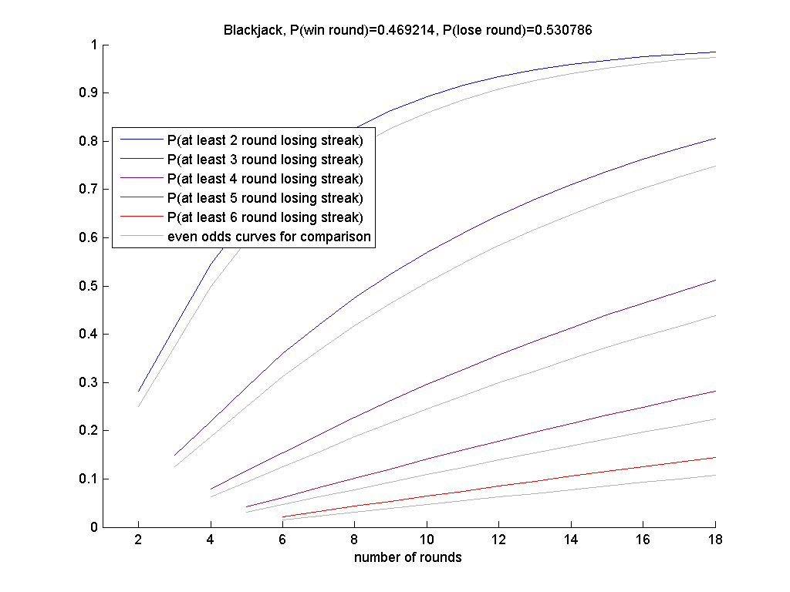
So...
Martingale is likely to bankrupt you after only a moderate number of hands.
(Note that finding good tables with low minimum bets is hard. The geometric sum
above will probably need to be multiplied by a factor of $5, $10 or $25.)
Is there another way to look at this situation?
I know I am likely to lose all my money.
Suppose I happen, by chance, not to lose my money too quickly...
Is there an optimal number of hands I should play?
(In other words, if chance does not end my play by taking all my money, when
should I choose to stop playing.)
Simulating 2 games of 1 rounds.
0 -- pgame = 0.530786 ; bankroll $199
1 -- pgame = 0.469214 ; bankroll $201 <-- winning game (up $1)
Number of winning games: 1 (ratio 0.5)
Simulating 4 games of 2 rounds.
0 0 -- pgame = 0.281734 ; bankroll $197
0 1 -- pgame = 0.249052 ; bankroll $201 <-- winning game (up $1)
1 0 -- pgame = 0.249052 ; bankroll $200
1 1 -- pgame = 0.220162 ; bankroll $202 <-- winning game (up $2)
Number of winning games: 2 (ratio 0.5)
Simulating 8 games of 3 rounds.
0 0 0 -- pgame = 0.14954 ; bankroll $193
0 0 1 -- pgame = 0.132193 ; bankroll $201 <-- winning game (up $1)
0 1 0 -- pgame = 0.132193 ; bankroll $200
0 1 1 -- pgame = 0.116859 ; bankroll $202 <-- winning game (up $2)
1 0 0 -- pgame = 0.132193 ; bankroll $198
1 0 1 -- pgame = 0.116859 ; bankroll $202 <-- winning game (up $2)
1 1 0 -- pgame = 0.116859 ; bankroll $201 <-- winning game (up $1)
1 1 1 -- pgame = 0.103303 ; bankroll $203 <-- winning game (up $3)
Number of winning games: 5 (ratio 0.625)
Simulating 16 games of 4 rounds.
0 0 0 0 -- pgame = 0.0793739 ; bankroll $185
0 0 0 1 -- pgame = 0.0701664 ; bankroll $201 <-- winning game (up $1)
0 0 1 0 -- pgame = 0.0701664 ; bankroll $200
0 0 1 1 -- pgame = 0.062027 ; bankroll $202 <-- winning game (up $2)
0 1 0 0 -- pgame = 0.0701664 ; bankroll $198
0 1 0 1 -- pgame = 0.062027 ; bankroll $202 <-- winning game (up $2)
0 1 1 0 -- pgame = 0.062027 ; bankroll $201 <-- winning game (up $1)
0 1 1 1 -- pgame = 0.0548318 ; bankroll $203 <-- winning game (up $3)
1 0 0 0 -- pgame = 0.0701664 ; bankroll $194
1 0 0 1 -- pgame = 0.062027 ; bankroll $202 <-- winning game (up $2)
1 0 1 0 -- pgame = 0.062027 ; bankroll $201 <-- winning game (up $1)
1 0 1 1 -- pgame = 0.0548318 ; bankroll $203 <-- winning game (up $3)
1 1 0 0 -- pgame = 0.062027 ; bankroll $199
1 1 0 1 -- pgame = 0.0548318 ; bankroll $203 <-- winning game (up $3)
1 1 1 0 -- pgame = 0.0548318 ; bankroll $202 <-- winning game (up $2)
1 1 1 1 -- pgame = 0.0484712 ; bankroll $204 <-- winning game (up $4)
Number of winning games: 11 (ratio 0.6875)
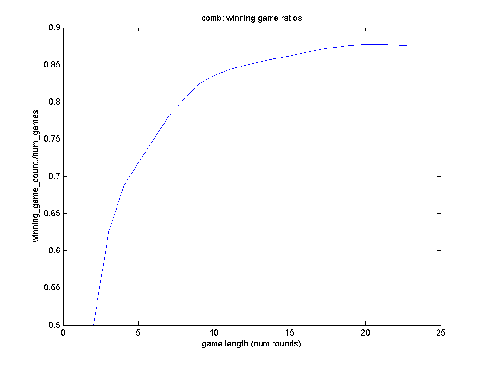
Intriguing
I was very intrigued when I saw that curve.
I started playing around and found that it is even more interesting when the initial bankroll is lower...
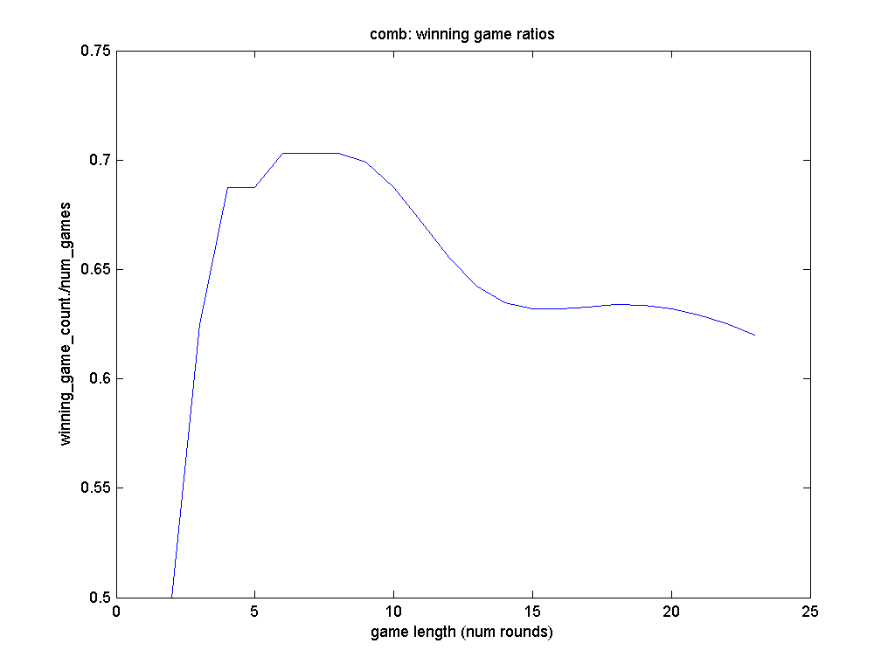
This is also interesting:
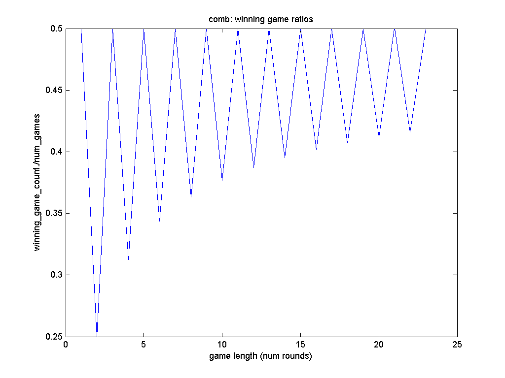
With flat betting (i.e., non-Martingale), it is better to play an odd number of hands.
asdf
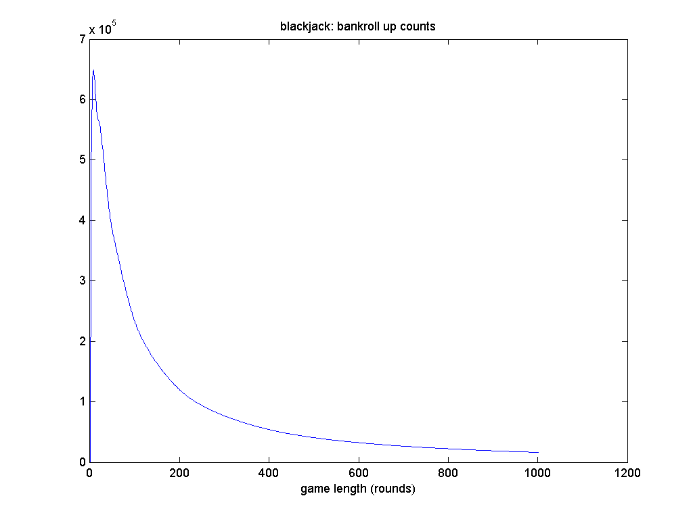
Count of times that bankroll was up for games of each length that were played during the simulation.
asdf
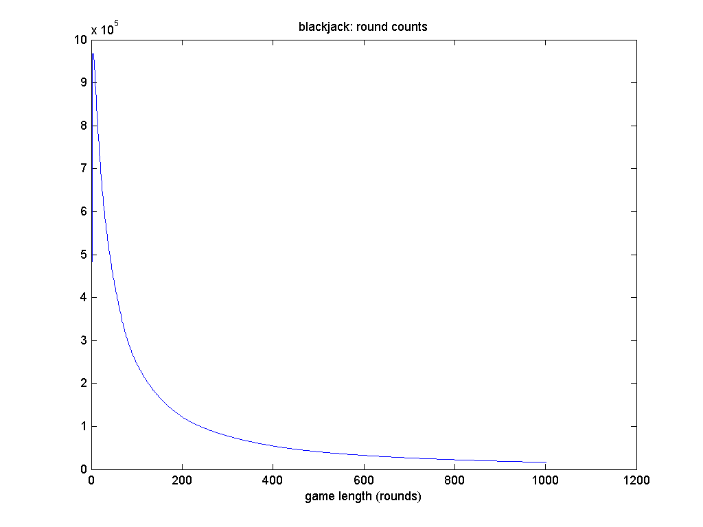
Count of games of each length that were played during the simulation.
asdf
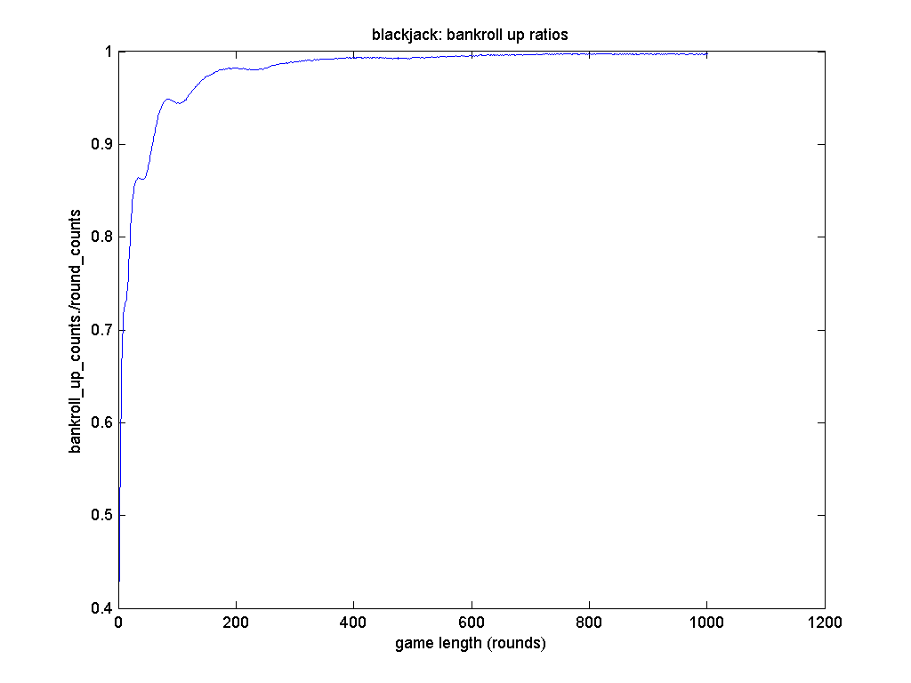
Ratio of number of games of each length with bankroll up to total number of games of each length.
asdf
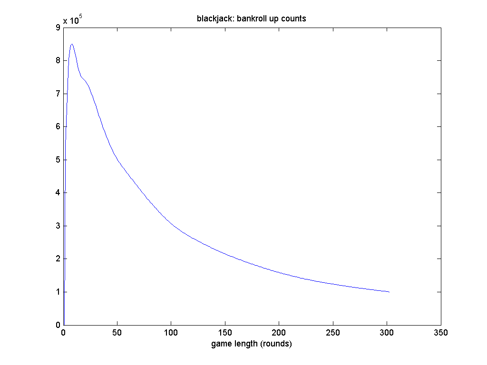
Count of times that bankroll was up for games of each length that were played during the simulation.
asdf
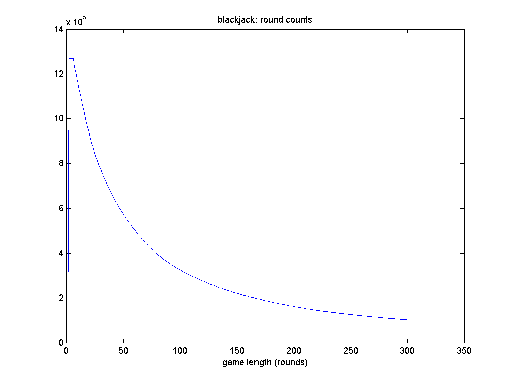
Count of games of each length that were played during the simulation.
asdf
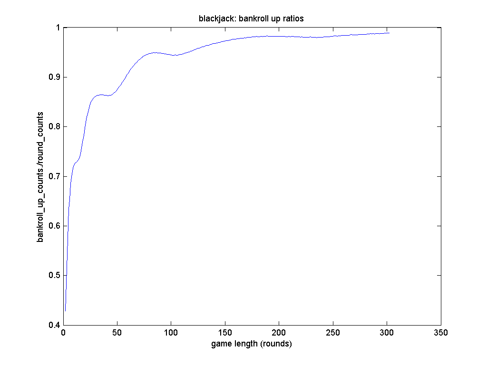
Ratio of number of games of each length with bankroll up to total number of games of each length.
I also like to look at the bankroll up/down count ratios:
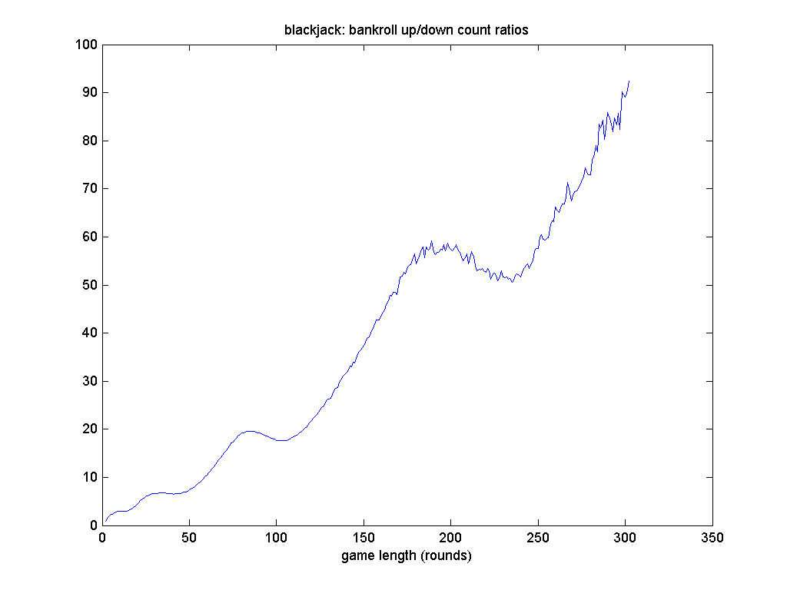
Ratio of times the bankroll is up to times it is down for games of each length.